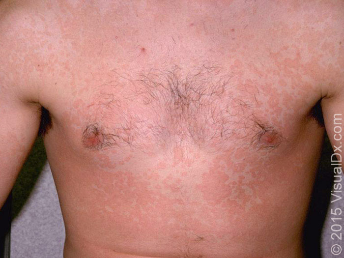

Much more common in tropical locations. More commonly affects those with a weakened immune system.
A third of cases will fluoresce under a woods lamp.
Occurs more commonly in tropical climates
Not contagious
Caused by malassezia globosa fungi and occasionally other malassezia species. These are normal skin flora.
Recurrence is common. Long-term prophylactic therapy is often needed.
Look for hyphae and yeast cells (spaghetti and meatball pattern)

KOH Prep
Scrape the edge of a fungal lesion (where growth is occurring). KOH dissolves human cells, leaving only the yeast cells visible. Heat will speed up the process.